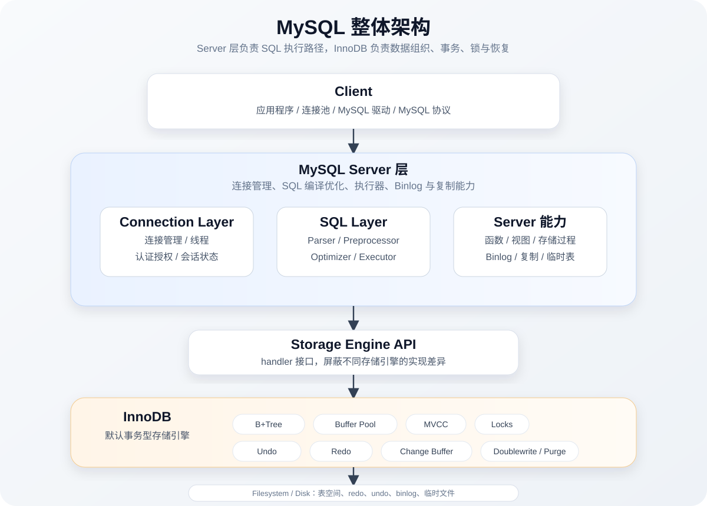
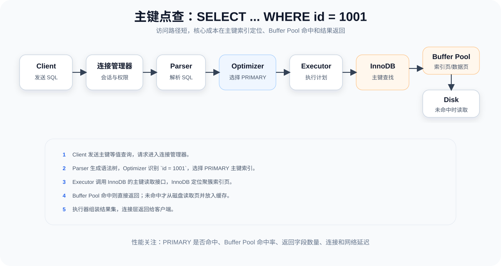
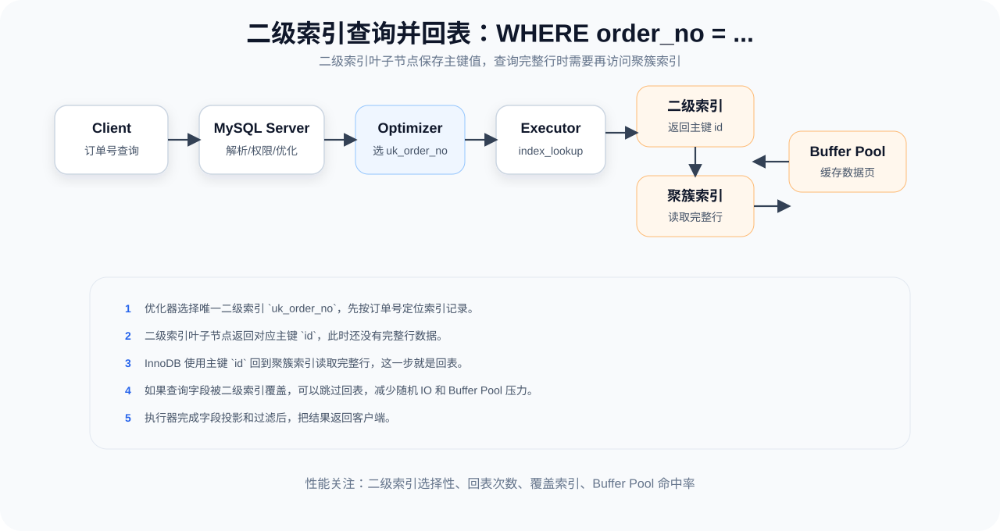
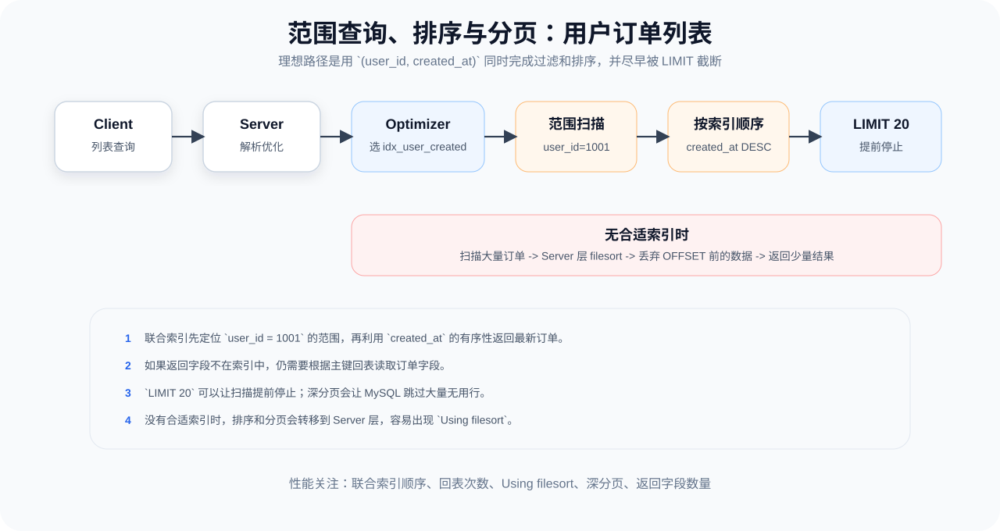
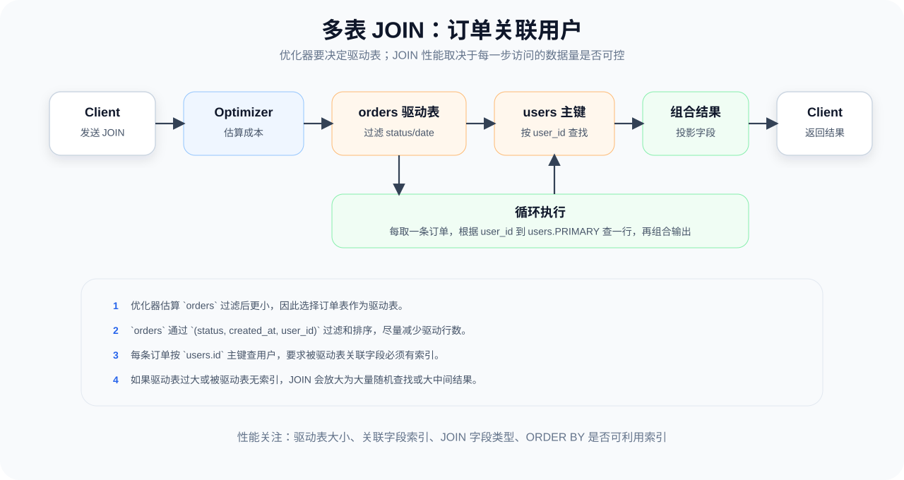
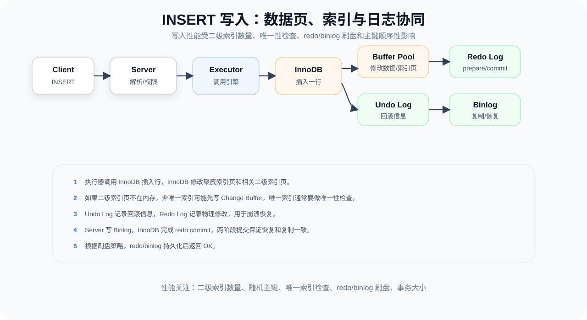
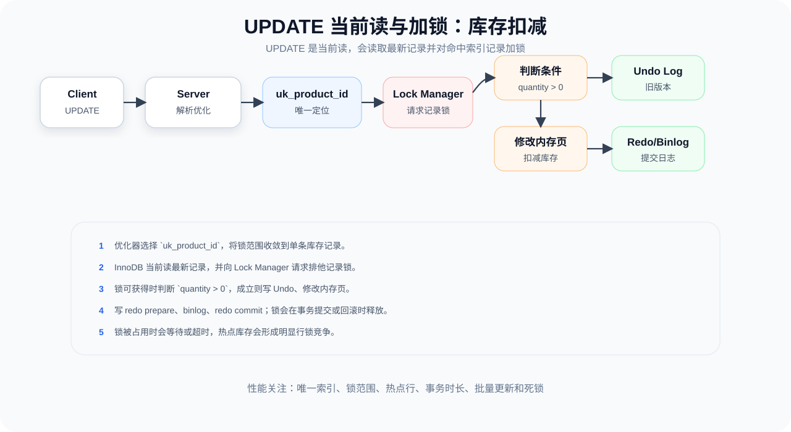
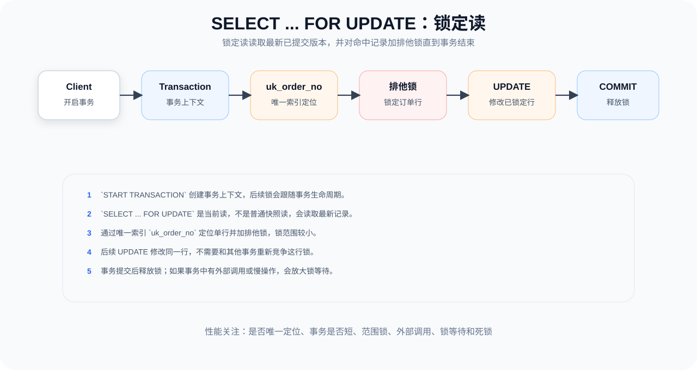
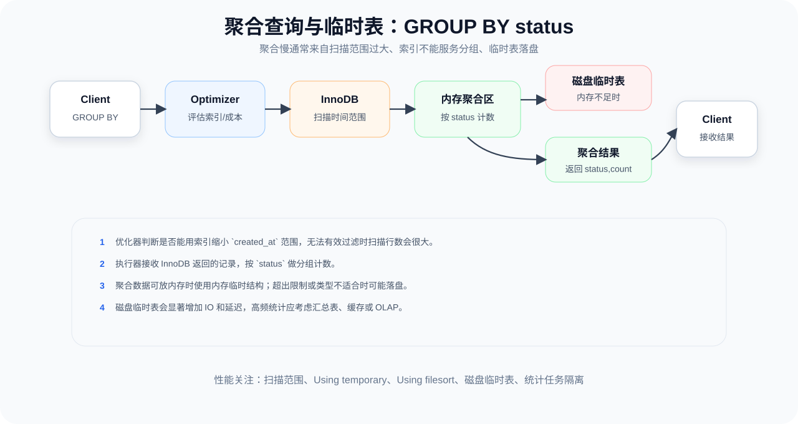

MySQL 架构
一、为什么要学习 MySQL 架构
很多 MySQL 问题表面上是 SQL 慢、锁等待、主从延迟、连接打满、磁盘 IO 高，真正原因往往藏在架构链路里。
例如：
SELECT * FROM orders WHERE order_no = 'A202607220001';
这条 SQL 看起来很简单，但它从客户端到 MySQL 服务端至少会经过：
- 网络连接与认证；
- SQL 解析；
- 权限检查；
- 优化器生成执行计划；
- 执行器调用存储引擎；
- InnoDB 通过索引定位记录；
- Buffer Pool 命中或磁盘读取；
- 返回结果给客户端。
从高性能 MySQL 的角度看，学习架构不是为了背模块名称，而是为了回答这些生产问题：
- 为什么同一条 SQL 有时很快，有时很慢；
- 为什么索引不合理会扩大锁范围；
- 为什么长事务会拖垮 Undo Log 和 MVCC；
- 为什么写入提交既涉及 redo log，又涉及 binlog；
- 为什么连接数、线程数、临时表、排序、Buffer Pool 都会影响吞吐量；
- 为什么读写分离会出现写后读不一致。
可以先把 MySQL 理解成三层：
客户端层
应用程序、连接池、MySQL 协议、驱动
MySQL Server 层
连接管理、认证授权、SQL 解析、优化器、执行器、Binlog、复制、函数、视图、存储过程
存储引擎层
InnoDB、MyISAM、MEMORY 等，负责数据页、索引、事务、锁、崩溃恢复
现在绝大多数生产系统使用 InnoDB，所以本文重点以 MySQL Server 层 + InnoDB 为主线。
二、MySQL 整体架构图

需要注意：MySQL Server 层负责“怎么执行 SQL”，InnoDB 负责“怎么存取数据”。
优化 SQL 时，两层都要看：
- Server 层：SQL 写法、执行计划、排序、临时表、函数计算、连接数、线程调度；
- InnoDB 层：索引组织、Buffer Pool、锁、MVCC、redo log、undo log、刷盘策略。
三、客户端与连接管理模块
1. 客户端与 MySQL 协议
客户端可以是 Java、Go、Python、PHP 应用，也可以是命令行工具：
mysql -h 127.0.0.1 -P 3306 -u root -p
它们通过 MySQL 协议和服务端通信。一次查询不是简单地“发 SQL 字符串”，还包括连接建立、认证、命令包发送、结果集返回、错误码返回等过程。
高性能影响：
- 网络延迟会直接增加 SQL 响应时间；
- 大结果集会消耗网络、内存和客户端解析成本；
- 频繁创建连接会造成认证、线程创建、握手开销；
- 应用连接池配置不当，会造成数据库连接打满或应用侧排队。
实战建议：
- 应用侧使用连接池，不要每次请求都新建数据库连接；
- 控制连接池最大连接数，不要让多个应用实例把 MySQL 打满；
- 查询只返回必要字段，避免
SELECT *和大结果集； - 对后台导出、报表查询做限流和异步化。
2. 连接管理器
MySQL 服务端收到连接后，会为连接分配线程或从线程缓存中复用线程。每个连接都有自己的会话状态，例如：
- 当前数据库；
- 字符集；
- 事务状态；
- 隔离级别；
- 用户变量；
- 临时表；
- 预处理语句。
常见相关参数：
SHOW VARIABLES LIKE 'max_connections';
SHOW VARIABLES LIKE 'thread_cache_size';
SHOW STATUS LIKE 'Threads%';
SHOW STATUS LIKE 'Connections';
高性能影响：
max_connections太小会导致应用无法连接；max_connections太大也不是好事，过多并发线程会引发上下文切换、内存消耗和锁竞争；- 慢 SQL 堆积时，连接会长时间占用线程，进一步拖慢系统；
- 应用连接池过大，可能把数据库变成排队场，而不是提升吞吐量。
实战建议：
- 优先优化慢 SQL 和事务时间，而不是盲目调大连接数；
- 应用连接池总量要和 MySQL 实际承载能力匹配；
- 监控
Threads_running，它比单纯的连接总数更能反映当前压力； - 连接数暴涨时，要排查慢 SQL、锁等待、应用重试风暴和连接泄漏。
3. 认证与权限模块
认证模块负责确认用户身份，权限模块负责判断用户是否能访问某个库、表、列或执行某类操作。
例如：
SELECT * FROM orders;
MySQL 需要判断当前用户是否有 orders 表的 SELECT 权限。
高性能影响：
- 权限检查通常不是性能瓶颈，但权限模型复杂会增加运维成本；
- 生产应用账号权限过大，会放大误操作和 SQL 注入风险；
- 过多账号、主机匹配和授权混乱，会增加治理难度。
实战建议：
- 应用账号遵循最小权限原则；
- 读写账号分离；
- 禁止普通应用账号拥有
DROP、TRUNCATE、高危 DDL 权限； - 生产变更使用受控账号和审计流程。
四、SQL 层核心模块
1. 解析器 Parser
解析器负责把 SQL 文本转换成 MySQL 能理解的语法树。
例如：
SELECT id, amount
FROM orders
WHERE user_id = 1001
ORDER BY created_at DESC
LIMIT 20;
解析器会识别：
- 这是
SELECT语句； - 查询字段是
id、amount； - 目标表是
orders； - 过滤条件是
user_id = 1001； - 排序字段是
created_at DESC； - 限制返回 20 行。
如果 SQL 语法错误，会在解析阶段直接失败。
高性能影响：
- 普通业务中解析开销通常不是主要瓶颈；
- 高频短 SQL 场景下，预处理语句可以减少重复解析和网络传输成本；
- SQL 写得越复杂，后续优化器搜索空间可能越大。
2. 预处理器 Preprocessor
预处理器负责语义检查，例如：
- 表是否存在；
- 字段是否存在；
- 字段是否歧义；
- 函数和表达式是否合法；
- 视图是否可以展开。
例如：
SELECT unknown_column FROM orders;
如果 unknown_column 不存在，会在这个阶段报错。
3. 优化器 Optimizer
优化器是 MySQL 性能中最关键的 Server 层模块之一。它负责决定“怎么执行更划算”。
同一条 SQL 可能有多种执行方式：
SELECT *
FROM orders
WHERE user_id = 1001
AND status = 'paid'
ORDER BY created_at DESC
LIMIT 20;
优化器需要决定：
- 走哪个索引；
- 是否全表扫描；
- 是否使用索引排序；
- 是否需要临时表；
- 是否需要文件排序；
- 多表 JOIN 时谁做驱动表；
- 是否能做条件下推、索引下推、派生表合并等优化。
优化器主要基于成本估算，而成本依赖统计信息、索引选择性、行数估计、数据分布等。
高性能影响：
- 统计信息不准可能导致选错索引；
- 联合索引顺序会影响优化器可选择的路径；
ORDER BY、GROUP BY、DISTINCT可能引入临时表和排序；- 多表 JOIN 顺序错误会造成扫描行数暴涨；
- 隐式类型转换、函数包裹索引列会让优化器难以使用索引。
常用观察工具：
EXPLAIN SELECT ...;
EXPLAIN ANALYZE SELECT ...;
SHOW WARNINGS;
ANALYZE TABLE orders;
实战建议：
- 所有核心 SQL 上线前都应看
EXPLAIN； - 关注
type、key、rows、filtered、Extra； - 大表出现
ALL、大量Using filesort、大量Using temporary时要重点评估； - 不要迷信“有索引就一定快”，要看扫描行数和回表成本。
4. 执行器 Executor
执行器负责按照优化器选出的执行计划真正执行 SQL。
它会：
- 调用存储引擎接口读取或修改数据；
- 对返回记录做过滤；
- 执行表达式计算；
- 执行排序、分组、聚合；
- 处理 LIMIT；
- 把结果集返回客户端。
高性能影响：
- 执行器处理的行数越多，CPU、内存、网络消耗越大；
- 存储引擎返回大量行后再过滤，会浪费 IO 和 CPU；
- 排序和分组数据量过大，可能使用磁盘临时表；
- 返回字段越多，回表、内存和网络成本越高。
实战建议：
- 让过滤尽量发生在索引和存储引擎层；
- 避免
SELECT *； - 大分页用游标分页或延迟关联；
- 大统计任务不要和在线交易混跑，必要时放到只读库或 OLAP 系统。
五、存储引擎接口层
MySQL 使用插件式存储引擎。Server 层不直接操作数据文件，而是通过统一的 handler 接口调用存储引擎。
例如执行器可能向引擎发出这些请求：
- 打开表；
- 通过主键读取一行；
- 通过索引范围扫描；
- 插入一行；
- 更新一行；
- 删除一行；
- 提交事务；
- 回滚事务。
这样 MySQL 可以支持不同存储引擎：
- InnoDB：事务、行锁、MVCC、崩溃恢复，生产默认选择；
- MyISAM：表锁、不支持事务，核心业务不推荐；
- MEMORY：内存表，数据重启丢失；
- ARCHIVE：归档场景；
- CSV：文件交换或测试场景。
从高性能 MySQL 的角度看，存储引擎接口带来的关键认知是：Server 层决定访问路径，存储引擎决定路径上的真实代价。
例如优化器决定使用 idx_user_created，但真正的索引页读取、Buffer Pool 命中、行锁、回表，都发生在 InnoDB。
六、InnoDB 核心模块
1. 表空间与数据页
InnoDB 以页为基本单位管理数据，默认页大小通常是 16KB。
表和索引最终都会落在表空间中：
- 系统表空间；
- 独立表空间；
- undo 表空间；
- 临时表空间；
- redo log 文件。
高性能影响：
- MySQL 不是一行一行从磁盘读，而是一页一页读；
- 一次查询命中的数据页越少，IO 成本越低；
- 行越大，一个页能放的记录越少，缓存效率越差；
- 大字段、宽表会降低 Buffer Pool 的有效利用率。
实战建议：
- 字段类型尽量精确，不要无脑使用大字段；
- 热点字段和大字段可以考虑拆表；
- 高频查询尽量只读取必要字段；
- 表结构设计要考虑缓存命中率，而不只是字段能不能放下。
2. B+Tree 索引模块
InnoDB 使用 B+Tree 组织索引。
主键索引是聚簇索引，叶子节点保存完整行数据。二级索引叶子节点保存索引列和主键值。
例如：
CREATE TABLE orders (
id BIGINT UNSIGNED PRIMARY KEY AUTO_INCREMENT,
order_no VARCHAR(64) NOT NULL,
user_id BIGINT UNSIGNED NOT NULL,
status TINYINT NOT NULL,
amount DECIMAL(10, 2) NOT NULL,
created_at DATETIME NOT NULL,
UNIQUE KEY uk_order_no(order_no),
KEY idx_user_created(user_id, created_at)
) ENGINE=InnoDB;
查询订单号：
SELECT * FROM orders WHERE order_no = 'A202607220001';
执行路径通常是：
- 通过唯一索引
uk_order_no找到主键id； - 根据
id回到聚簇索引读取完整行； - 返回数据。
如果查询字段被二级索引覆盖：
SELECT id FROM orders WHERE order_no = 'A202607220001';
二级索引中已经有 order_no 和主键 id，通常不需要回表。
高性能影响：
- 主键越短，所有二级索引越小；
- 主键越随机，页分裂和写放大越明显；
- 回表次数越多，随机 IO 和 Buffer Pool 压力越大；
- 联合索引可以同时优化过滤、排序和覆盖查询。
3. Buffer Pool
Buffer Pool 是 InnoDB 最重要的内存模块，用于缓存数据页和索引页。
查询时：
- 如果目标页在 Buffer Pool 中，直接内存读取；
- 如果不在 Buffer Pool 中，需要从磁盘读取页到内存。
更新时：
- 通常先修改 Buffer Pool 中的数据页；
- 被修改但未刷盘的页叫脏页；
- 后台线程会在合适时机把脏页刷回磁盘。
高性能影响：
- Buffer Pool 命中率高，查询主要走内存；
- Buffer Pool 太小，会频繁淘汰页并触发磁盘 IO；
- 大查询可能污染 Buffer Pool，把热点页挤出去；
- 大量脏页刷盘可能造成 IO 抖动。
常用观察：
SHOW VARIABLES LIKE 'innodb_buffer_pool_size';
SHOW GLOBAL STATUS LIKE 'Innodb_buffer_pool%';
SHOW ENGINE INNODB STATUS\G
实战建议：
- 专用数据库服务器通常把 Buffer Pool 设置为物理内存的 60% 到 75%，具体要给系统、连接、日志、临时表留空间；
- 避免在线库执行无节制全表扫描；
- 大报表、大导出尽量走只读库或离线系统；
- 表和索引设计要减少不必要的数据页访问。
4. MVCC 与 Read View
MVCC 是多版本并发控制。它让普通快照读在很多情况下不阻塞写，写也不阻塞普通读。
InnoDB 每行记录有隐藏字段，配合 Undo Log 保存历史版本。事务读取时，通过 Read View 判断哪个版本对当前事务可见。
普通快照读：
SELECT * FROM orders WHERE id = 1;
当前读：
SELECT * FROM orders WHERE id = 1 FOR UPDATE;
UPDATE orders SET status = 2 WHERE id = 1;
DELETE FROM orders WHERE id = 1;
高性能影响：
- MVCC 提升读写并发能力；
- 长事务会导致旧版本长期无法清理，Undo Log 膨胀；
- 快照读不等于读最新数据；
- 当前读会加锁，可能产生锁等待。
实战建议：
- 事务要短；
- 不要在事务里做 HTTP、RPC、文件处理等慢操作；
- 库存、余额、订单状态流转要用当前读或原子更新；
- 对“写后马上读”的业务，要明确读主库还是从库，读快照还是读最新。
5. 锁模块
InnoDB 常见锁包括：
- 行锁；
- 间隙锁；
- Next-Key Lock；
- 表级意向锁；
- 自增锁；
- 元数据锁由 Server 层管理，但经常和 InnoDB 事务一起影响线上行为。
高性能影响：
- 行锁依赖索引，索引不合理会扩大锁范围；
- 范围当前读可能引入间隙锁；
- 长事务持锁时间长，会造成锁等待堆积；
- DDL 可能等待元数据锁，被长事务阻塞；
- 死锁通常来自访问顺序不一致、索引缺失、事务范围过大。
排查工具：
SHOW ENGINE INNODB STATUS\G
SELECT *
FROM information_schema.innodb_trx;
MySQL 8.0 也可以结合 performance_schema.data_locks、data_lock_waits 观察锁。
实战建议：
- 更新和删除必须命中合适索引；
- 用唯一索引定位单行，锁范围最小；
- 批量更新分批提交；
- 多个业务流程更新多张表时，尽量统一加锁顺序；
- 避免大事务和交互式事务。
6. Undo Log
Undo Log 主要承担两个角色：
- 事务回滚：记录修改前的值；
- MVCC：提供历史版本。
例如：
UPDATE account SET balance = balance - 100 WHERE id = 1;
InnoDB 会在 Undo Log 中记录旧版本，用于回滚或快照读。
高性能影响：
- 大事务会产生大量 Undo Log；
- 长事务会阻止 Undo Log 被 purge 清理；
- Undo 版本链过长会拖慢快照读；
- 大量历史版本会增加存储和恢复压力。
实战建议：
- 避免一次更新海量数据；
- 批处理任务按主键范围分批提交；
- 监控长事务；
- 业务事务边界只包住真正需要一致性的 SQL。
7. Redo Log
Redo Log 是 InnoDB 的物理日志，用于崩溃恢复，也提升写入性能。
如果每次提交都把随机数据页刷盘，性能会很差。InnoDB 使用 redo log 把随机写变成更高效的顺序写。
简化流程：
- 修改 Buffer Pool 中的数据页；
- 写入 redo log buffer；
- 提交时按策略刷 redo log；
- 后台线程把脏页刷回磁盘；
- 宕机后通过 redo log 恢复已提交修改。
关键参数：
SHOW VARIABLES LIKE 'innodb_flush_log_at_trx_commit';
常见取值：
1：每次事务提交都刷盘，可靠性最高；2：每次提交写入 OS Cache，每秒刷盘；0：每秒写入并刷盘，性能更激进，可靠性更弱。
高性能影响：
- redo log 写入能力影响事务提交吞吐；
- redo log 空间太小会导致频繁 checkpoint；
- 刷盘策略影响性能和数据丢失风险；
- IO 抖动会拉高提交延迟。
实战建议：
- 订单、支付、账户等核心业务优先可靠性；
- 可重放日志、埋点等场景可按业务容忍度权衡；
- 监控磁盘延迟，而不是只看 SQL 层耗时；
- 不要把 redo log、binlog、数据文件的 IO 压力完全忽视。
8. Change Buffer
Change Buffer 用于优化非唯一二级索引的写入。当要修改的二级索引页不在 Buffer Pool 中时，InnoDB 可以先把变更记录到 Change Buffer，后续读取或后台合并时再应用到真实索引页。
高性能影响：
- 对写多读少的非唯一二级索引有帮助；
- 对唯一索引帮助有限，因为唯一性检查通常必须读取索引页；
- 如果写入后很快读取同一索引范围，合并成本仍然会出现；
- 索引过多时，写入维护成本仍然会上升。
实战建议：
- 不要为了“可能会查”给所有字段建索引；
- 唯一索引表达真实业务约束，不要滥用；
- 写密集表要控制二级索引数量。
9. Doublewrite Buffer
Doublewrite Buffer 用于降低数据页部分写失败带来的损坏风险。
磁盘写入一个 16KB 页时，如果只写了一半就宕机，数据页可能损坏。InnoDB 会先把页写到 doublewrite 区域，再写到最终位置。恢复时如果发现页损坏，可以用 doublewrite 中的完整副本恢复。
高性能影响：
- 提升可靠性；
- 带来额外写入成本；
- 在高写入负载下会影响 IO；
- 现代存储和 MySQL 版本对该机制有不同优化。
核心业务通常不应为了追求极限写入而轻易牺牲可靠性。
七、日志与复制模块
1. Binlog
Binlog 是 MySQL Server 层日志，记录逻辑变更，用于：
- 主从复制；
- 时间点恢复；
- 数据审计；
- 数据订阅。
常见格式：
- Statement：记录 SQL；
- Row：记录行变更；
- Mixed：混合模式。
生产中通常优先使用 Row 格式，因为复制更确定，虽然日志量可能更大。
查看配置：
SHOW VARIABLES LIKE 'log_bin';
SHOW VARIABLES LIKE 'binlog_format';
SHOW VARIABLES LIKE 'sync_binlog';
高性能影响：
- binlog 刷盘策略影响提交性能和故障丢失风险；
- 大事务会生成大 binlog，导致复制延迟；
- Row 格式更可靠，但日志量更大；
- binlog 保留过久会占用大量磁盘。
2. Redo Log 与 Binlog 两阶段提交
InnoDB 的 redo log 和 MySQL Server 的 binlog 分属两层。事务提交时，需要保证两者一致，否则可能出现：
- InnoDB 已提交，但 binlog 没记录，复制和恢复丢数据；
- binlog 已记录，但 InnoDB 没提交，恢复后数据不一致。
因此 MySQL 使用两阶段提交协调 redo log 和 binlog：
1. InnoDB 写 redo log prepare
2. Server 写 binlog
3. InnoDB 写 redo log commit
高性能影响：
- 提交事务要同时考虑 redo 和 binlog；
innodb_flush_log_at_trx_commit和sync_binlog共同影响可靠性与性能；- 开启 binlog 后写入成本会增加，但换来复制和恢复能力。
3. 主从复制
复制的大致流程：
- 主库提交事务，写入 binlog；
- 从库 IO 线程拉取主库 binlog；
- 从库写入 relay log；
- 从库 SQL 线程或多线程复制回放 relay log；
- 从库数据追上主库。
高性能影响：
- 主库大事务会导致从库回放慢；
- 从库执行慢 SQL 会导致延迟；
- 热点表、无主键表、DDL 都可能放大复制延迟；
- 读写分离下，从库延迟会导致读到旧数据。
实战建议：
- 强一致读、写后读走主库或使用一致性路由；
- 控制大事务和批量更新；
- 从库也要有合理索引，因为复制回放也要执行更新；
- 监控
Seconds_Behind_Master或基于 GTID/心跳的延迟指标。
八、临时表、排序与聚合模块
很多慢 SQL 不是因为没有连接或认证问题，而是因为执行阶段产生了大量临时数据。
常见触发场景：
SELECT status, COUNT(*)
FROM orders
WHERE created_at >= '2026-07-01'
GROUP BY status;
SELECT *
FROM orders
WHERE user_id = 1001
ORDER BY amount DESC
LIMIT 20;
如果索引不能同时满足过滤、分组、排序，MySQL 可能使用：
- 内存临时表；
- 磁盘临时表；
- filesort；
- 聚合计算。
高性能影响：
- 数据量小时问题不明显；
- 数据量大时会消耗 CPU、内存、磁盘临时空间；
- 磁盘临时表会明显拉高延迟；
- 报表 SQL 可能挤占在线交易资源。
观察指标：
SHOW GLOBAL STATUS LIKE 'Created_tmp%';
SHOW GLOBAL STATUS LIKE 'Sort%';
实战建议：
- 高频列表页用联合索引同时服务
WHERE和ORDER BY； - 高频统计可以用汇总表、异步计算、缓存或 OLAP；
- 后台导出分批分页，不要一次拉全量；
- 对复杂报表隔离到只读库或分析系统。
九、不同查询的执行时序图
下面用时序图描述不同 SQL 从客户端到 MySQL 服务端的典型链路。实际 MySQL 内部更复杂，但这些图能帮助建立性能分析的主线。
1. 主键点查
SQL：
SELECT id, order_no, amount
FROM orders
WHERE id = 1001;
特点：
- 主键等值查询；
- 优化器通常选择
const； - InnoDB 通过聚簇索引定位一行；
- 性能通常最稳定。

性能分析重点：
- 是否使用主键或唯一索引；
- Buffer Pool 是否命中；
- 返回字段是否过多；
- 单次很快但并发很高时，关注连接池、CPU 和热点页竞争。
2. 二级索引查询并回表
SQL：
SELECT id, order_no, amount, status
FROM orders
WHERE order_no = 'A202607220001';
假设 order_no 是唯一二级索引。

性能分析重点：
- 二级索引是否唯一，能否快速定位；
- 是否发生回表；
- 如果只查
id，是否可以覆盖索引； - 回表次数多时，延迟会明显上升。
3. 范围查询、排序与分页
SQL：
SELECT id, order_no, amount, created_at
FROM orders
WHERE user_id = 1001
ORDER BY created_at DESC
LIMIT 20;
理想索引：
CREATE INDEX idx_user_created ON orders(user_id, created_at);

如果没有合适索引，可能变成：
扫描大量订单 -> Server 层排序 -> 取前 20 行
性能分析重点：
- 索引是否同时满足过滤和排序；
LIMIT是否能提前停止扫描；- 是否出现
Using filesort； - 深分页
LIMIT 20 OFFSET 100000是否导致扫描大量无用行； - 返回字段是否导致大量回表。
4. 多表 JOIN 查询
SQL：
SELECT o.id, o.order_no, u.name
FROM orders o
JOIN users u ON o.user_id = u.id
WHERE o.status = 2
AND o.created_at >= '2026-07-01'
ORDER BY o.created_at DESC
LIMIT 100;
可能索引：
CREATE INDEX idx_status_created_user ON orders(status, created_at, user_id);
-- users.id 通常是主键

性能分析重点：
- 驱动表是否足够小；
- 被驱动表关联字段是否有索引；
- JOIN 字段类型是否一致；
- 是否先过滤再 JOIN；
- 是否产生大中间结果集；
ORDER BY是否能利用驱动表索引。
JOIN 优化的核心不是“少 JOIN”，而是让每一步访问的数据量可控。
5. INSERT 写入
SQL：
INSERT INTO orders(order_no, user_id, status, amount, created_at)
VALUES('A202607220001', 1001, 1, 99.00, NOW());

性能分析重点：
- 二级索引越多，插入维护成本越高；
- 唯一索引需要做唯一性检查；
- 主键随机会导致页分裂；
- redo/binlog 刷盘策略影响提交延迟；
- 批量插入要控制事务大小，避免大事务和复制延迟。
6. UPDATE 当前读与加锁
SQL：
UPDATE stock
SET quantity = quantity - 1
WHERE product_id = 1001
AND quantity > 0;
理想索引：
CREATE UNIQUE INDEX uk_product_id ON stock(product_id);

性能分析重点：
product_id是否唯一索引；- 是否通过一条原子 UPDATE 避免先查再改；
- 热点商品会不会形成单行热点；
- 事务是否足够短；
- 锁等待是否来自索引缺失或业务并发冲突。
7. SELECT ... FOR UPDATE 锁定读
SQL：
START TRANSACTION;
SELECT *
FROM orders
WHERE order_no = 'A202607220001'
FOR UPDATE;
UPDATE orders
SET status = 2
WHERE order_no = 'A202607220001';
COMMIT;

性能分析重点：
FOR UPDATE是当前读，会加锁；- 唯一索引定位单行时锁范围较小；
- 范围条件下可能锁住更多记录和间隙；
- 事务期间锁不会释放，直到提交或回滚；
- 不要在事务中等待用户输入、调用外部接口或执行慢任务。
8. 聚合查询与临时表
SQL：
SELECT status, COUNT(*)
FROM orders
WHERE created_at >= '2026-07-01'
GROUP BY status;

性能分析重点：
- 时间范围是否过大；
- 是否有合适索引；
- 是否出现
Using temporary； - 是否出现
Using filesort； - 高频统计是否应该改为汇总表或异步任务。
十、典型 SQL 的架构级优化思路
1. 主键点查慢
如果主键点查都慢，通常不要第一反应改索引，而要看：
- Buffer Pool 命中率是否低；
- 磁盘 IO 是否高；
- 连接数和运行线程是否过多；
- 是否存在锁等待；
- 单行是否过大；
- 网络延迟是否异常；
- 应用连接池是否排队。
主键点查的访问路径很短，慢通常是系统性问题。
2. 二级索引查询慢
重点看：
- 是否命中正确二级索引；
- 是否大量回表；
- 是否可以覆盖索引；
- 条件选择性是否足够高；
- 查询字段是否过多；
- 统计信息是否准确。
优化方向：
- 设计更贴合查询模式的联合索引；
- 减少返回字段；
- 用覆盖索引优化高频轻量查询；
- 对低选择性条件，不要盲目单独建索引。
3. 列表分页慢
常见原因：
- 深分页；
- 排序字段没有合适索引；
WHERE和ORDER BY不能同时利用索引；- 返回字段太多导致大量回表；
- 数据范围过大。
优化方向：
- 使用游标分页；
- 建立
(过滤字段, 排序字段)联合索引； - 延迟关联，先查主键再回表；
- 限制最大翻页深度；
- 后台导出走异步任务。
4. JOIN 慢
重点看：
- 驱动表是否过滤后足够小；
- 被驱动表关联字段是否有索引；
- JOIN 字段类型和字符集是否一致；
- 是否产生大中间结果；
- 是否把过滤条件放到了合适的位置；
- 是否需要先聚合、先筛选、再关联。
优化方向：
- 给关联字段建立索引；
- 优化驱动表过滤条件；
- 避免大表无条件 JOIN；
- 必要时拆分查询或引入冗余字段；
- 复杂分析型 JOIN 放到 OLAP 系统。
5. UPDATE 慢或锁等待
重点看：
- 更新条件是否命中索引；
- 是否唯一定位；
- 事务是否太长；
- 是否存在热点行；
- 是否批量更新太大；
- 是否多个事务访问顺序不一致。
优化方向：
- 用唯一索引收敛锁范围；
- 分批更新；
- 缩短事务；
- 统一加锁顺序；
- 热点库存可做库存分桶、排队削峰或异步化。
十一、生产环境观察入口
1. 连接与线程
SHOW GLOBAL STATUS LIKE 'Threads%';
SHOW GLOBAL STATUS LIKE 'Connections';
SHOW PROCESSLIST;
关注：
Threads_connected：当前连接数；Threads_running：正在执行的线程数；- 大量 Sleep 连接：检查连接池；
- 大量 Query 状态：检查慢 SQL；
- 大量 Locked 或 waiting：检查锁等待。
2. 慢查询与执行计划
SHOW VARIABLES LIKE 'slow_query_log';
SHOW VARIABLES LIKE 'long_query_time';
EXPLAIN SELECT ...;
EXPLAIN ANALYZE SELECT ...;
关注：
- 扫描行数；
- 返回行数；
- 是否命中索引；
- 是否回表过多；
- 是否使用临时表和文件排序。
3. InnoDB 状态
SHOW ENGINE INNODB STATUS\G
可以观察：
- 事务；
- 锁等待；
- 死锁；
- Buffer Pool；
- IO；
- redo log；
- purge 状态。
4. Buffer Pool 与 IO
SHOW GLOBAL STATUS LIKE 'Innodb_buffer_pool%';
SHOW GLOBAL STATUS LIKE 'Innodb_data%';
SHOW GLOBAL STATUS LIKE 'Innodb_pages%';
关注：
- Buffer Pool 命中情况；
- 脏页比例；
- 读写请求；
- 磁盘 IO 压力。
5. 临时表与排序
SHOW GLOBAL STATUS LIKE 'Created_tmp%';
SHOW GLOBAL STATUS LIKE 'Sort%';
关注：
- 磁盘临时表是否过多；
- 排序扫描行数是否异常；
- 是否有报表 SQL 影响在线业务。
6. 复制延迟
SHOW REPLICA STATUS\G
-- 旧版本使用 SHOW SLAVE STATUS\G
关注：
- 复制线程是否正常；
- 延迟是否持续增长；
- 是否有大事务；
- 从库是否缺索引；
- 网络和磁盘是否异常。
十二、从高性能 MySQL 角度理解模块分工
可以把 MySQL 的核心模块和性能影响总结成下表。
| 模块 | 主要职责 | 性能影响 | 优化重点 |
|---|---|---|---|
| 客户端/连接池 | 管理应用到 MySQL 的连接 | 连接过多、频繁建连、网络延迟 | 合理连接池、限制大结果集 |
| 连接管理器 | 分配线程、维护会话状态 | 线程过多、上下文切换、连接打满 | 关注 Threads_running |
| 认证授权 | 身份校验和权限控制 | 通常不是瓶颈，但影响安全治理 | 最小权限、账号隔离 |
| Parser | SQL 语法解析 | 高频短 SQL 有解析成本 | 预处理语句、减少复杂 SQL |
| Preprocessor | 表字段检查、语义校验 | 通常不是瓶颈 | 保持表结构清晰 |
| Optimizer | 选择执行计划 | 选错索引、JOIN 顺序错误、临时表 | EXPLAIN、统计信息、联合索引 |
| Executor | 执行计划、过滤、排序、聚合 | 扫描行数、排序、临时表、网络返回 | 减少处理行数和返回字段 |
| InnoDB B+Tree | 组织数据和索引 | 回表、页分裂、索引体积 | 主键设计、联合索引、覆盖索引 |
| Buffer Pool | 缓存数据页和索引页 | 命中率、脏页刷盘、IO 抖动 | 合理内存、减少全表扫描 |
| MVCC | 快照读和并发控制 | 长事务、版本链、Undo 压力 | 短事务、监控长事务 |
| Lock Manager | 行锁、间隙锁、并发写控制 | 锁等待、死锁、热点行 | 命中索引、缩短事务 |
| Undo Log | 回滚和历史版本 | 大事务、长事务、purge 压力 | 分批提交、避免长事务 |
| Redo Log | 崩溃恢复和顺序写 | 提交延迟、checkpoint、IO | 合理刷盘策略和日志配置 |
| Binlog | 复制和恢复 | 写入成本、复制延迟、磁盘占用 | Row 格式、控制大事务 |
| 临时表/排序 | GROUP BY、ORDER BY、DISTINCT | CPU、内存、磁盘临时表 | 索引排序、汇总表、OLAP |
| 复制模块 | 主从同步和读写分离 | 主从延迟、写后读不一致 | 一致性路由、控制大事务 |
十三、实战检查清单
1. SQL 进入 MySQL 前
- 应用连接池最大连接数是否合理；
- 是否存在连接泄漏；
- 是否有请求重试风暴；
- 是否返回了过大的结果集；
- 是否有后台任务和在线请求共用同一连接池。
2. Server 层
- SQL 是否语义清晰，避免隐式转换；
- 是否使用
EXPLAIN验证执行计划； - 是否出现
Using temporary、Using filesort； - JOIN 驱动表和被驱动表是否合理；
- 排序、分组、分页是否能利用索引；
- 慢查询是否集中在少数 SQL。
3. InnoDB 层
- 表是否有短而稳定的主键；
- 高频查询是否有合适联合索引；
- 是否存在大量回表；
- 更新、删除、锁定读是否命中索引；
- 是否存在长事务；
- Buffer Pool 是否足够；
- redo、undo、脏页、IO 是否异常。
4. 写入与事务
- 事务是否足够短；
- 是否在事务中调用外部服务；
- 大批量写入是否分批；
- 唯一约束是否表达真实业务规则；
- 二级索引数量是否过多；
- binlog 和 redo 刷盘策略是否符合业务可靠性要求。
5. 复制与高可用
- 是否存在主从延迟；
- 写后读是否走了从库；
- 大事务是否影响复制；
- 从库是否具备同样必要的索引；
- binlog 保留策略是否满足恢复要求；
- 是否定期演练基于备份和 binlog 的恢复。
十四、常见误区
1. 误区：MySQL 慢就是索引问题
索引很重要，但不是全部。连接池、锁等待、Buffer Pool、磁盘 IO、临时表、复制延迟、应用重试都可能让 MySQL 变慢。
正确做法是从执行链路定位瓶颈：客户端等待、Server 层执行、InnoDB 读取、锁等待、日志刷盘、网络返回分别看。
2. 误区：连接数越大吞吐越高
连接数过大会增加线程调度、内存消耗和锁竞争。吞吐瓶颈在 CPU、IO、锁或慢 SQL 时，调大连接数只会让排队更严重。
3. 误区：有索引就不会锁很多行
InnoDB 行锁依赖索引。索引不合适、范围过大、条件选择性差，都可能锁住大量记录或间隙。
4. 误区：普通 SELECT 一定读到最新数据
在事务中，普通 SELECT 通常是快照读。不同隔离级别和事务边界下，看到的数据版本可能不同。要读最新并加锁，需要当前读，例如 FOR UPDATE。
5. 误区：从库可以承接所有读请求
读写分离要处理主从延迟。订单提交后马上查询、支付结果查询、库存确认等强一致读，不应盲目走从库。
6. 误区：大事务只是提交慢一点
大事务会影响 Undo Log、锁持有时间、redo/binlog 写入、复制延迟、崩溃恢复时间。生产中应尽量拆成小批次。
十五、总结
MySQL 架构可以用一条主线理解：
客户端发送 SQL
-> 连接管理与权限检查
-> Parser 解析 SQL
-> Optimizer 选择执行计划
-> Executor 执行计划
-> 通过存储引擎接口访问 InnoDB
-> InnoDB 使用 B+Tree、Buffer Pool、MVCC、锁、日志完成读写
-> 返回结果给客户端
从高性能 MySQL 的角度看，每个模块都承担不同角色：
- 连接层决定请求能否稳定进入数据库；
- 优化器决定访问路径是否合理；
- 执行器决定实际处理多少行、是否排序和聚合；
- InnoDB 决定索引、缓存、锁、事务和崩溃恢复的真实成本；
- redo log、binlog 决定写入可靠性、恢复能力和复制行为；
- Buffer Pool、临时表、磁盘 IO 决定系统在高并发下是否稳定。
实践中，不要孤立地优化某条 SQL。更好的方式是沿着完整链路排查：
- 客户端是否连接和返回合理；
- Server 层执行计划是否正确；
- InnoDB 索引和锁范围是否可控；
- Buffer Pool 和磁盘 IO 是否健康；
- 事务、日志和复制是否符合业务一致性要求。
能把这些模块串起来，就能从“会写 SQL”进入“能治理 MySQL 性能和稳定性”的阶段。